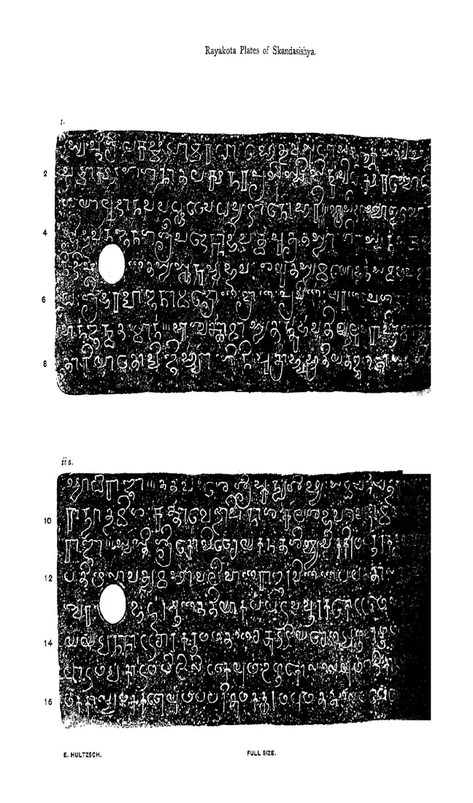
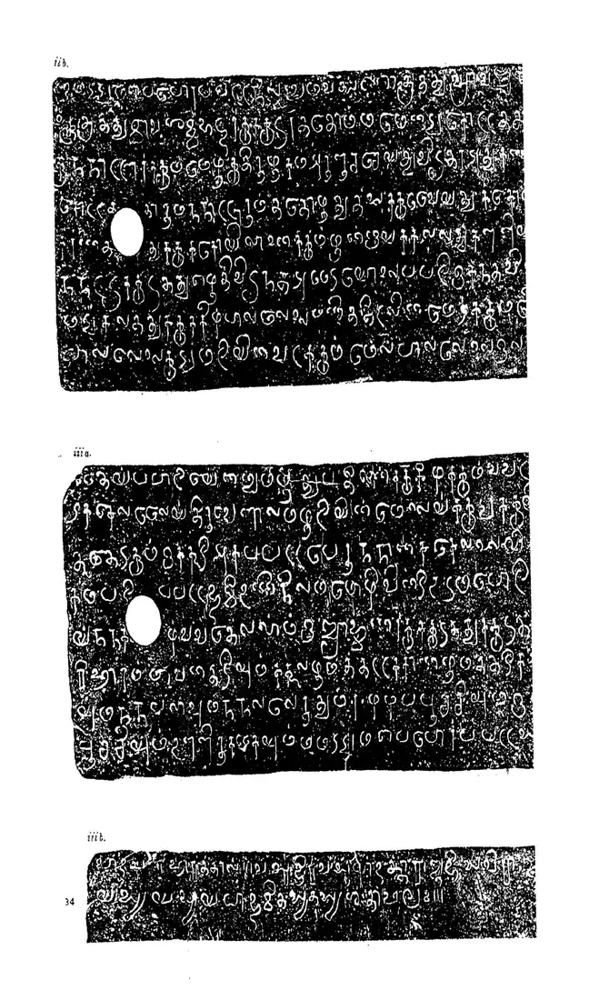

Rāyakōṭa plates of Skandaśishya
No. 8.— RAYAKOTA PLATES OF SKANDASISHYA.
By E. HULTZSCH, Ph.D.
This inscription is edited from two sets of Sir Walter Elliot's ink-impressions, which I owe to the kindness of Dr. Fleet. On the wrapper in which I received the impressions are the following remarks in Dr. Fleet's hand:— “The original copper-plates belong to Sir Walter Elliot. Three plates, about 8½" by 3½". In good order. They are quite smooth; the edges are not raised into rims. The ring has been cut. It is about 1/3" thick and 3½" in diameter. The seal is circular; 2" in diameter. It has, in relief on the surface of the seal, a kneeling buil facing to the proper left, and some small emblems, which I do not quite understand, above it; and a line of writing, which I cannot read, all round it. The label on them says that they were received from Captain Campbell of Royakota." Royakota is the former spelling of Râyakôta (properly Râyakôte in Kanarese), a hill fort, village and post office in the Krishnagiri tâluka of the Salem district.2
The inscription consists of three Sanskrit verses, a passage in Tamil prose (ll. 11 to 33), and a fourth Sanskrit verse at the end. The four Sanskrit verses must have been written or copied by a person who had only a very faint knowledge of that language. The Tamil portion is more correct, but shows many cases of doubling of initial and final consonants which are not sanctioned by the Tamil grammars.3
The alphabet of the four Sanskrit verses is Grantha. The prose passage is written in Tamil characters, occasionally interspersed with Grantha words. The alphabet of the inscription is docidedly more developed than that of the Kûram and Kasâkûdi plates,4 but more archaic than that of the Hastimalla plates.5 If it is admissible to compare the characters of stone inscriptions, which sometimes retain older forms, I would say that the alphabet of
1 The tithi of the date therefore is one of the Kalpâdis.
2 Mr. Sewell's Lists of Antiquities, Vol. I. p. 195.
3 Wherever the doubling is inadmissible, I have enclosed one (or two) of the consonants in round brackets.
4 South-Ind. Inscr. Vol. I. No. 151, and Vol. II. No. 78.
5 Ibid. No. 76.
the Râyakôṭa plates lies between the two Kil-Muṭṭugûr inscriptions of Narasimhavarman as the upper limit, and the two Âmbûr inscriptions of Nripatunga-Vikramavarman as the lower one.1
After an invocation of Vishnu (verse 1), the inscription furnishes the same genealogy as three inscriptions of the Pallava dynasty (viz. the Kailâsanâtha inscription of Râjasimha,2 the Kasâkûđi plates,3 and the Udayêndiram plates of Pallavamalla4) as far as Aśvatthâman. But while the Pallava inscriptions5 continue the line from Aśvatthâman to his son Pallava, the Râyakôṭa plates seem to state that Aśvatthâman had, by a Nâga woman, a son named Skandaśishya, a descendant of whom was another Skandaśishya, or, as he is called in the subsequent Tamil passage (l. 11), kô vijaya-Skandaśishya-Vikramavarman.
The Tamil portion states that, in his fourteenth year, the king issued a written order to the inhabitants of the district of Paṭuvûr-kôṭṭam and to the inhabitants of Mêl-Aṭaiyâru-nâṭu, a subdivision of this district, by which he granted to a Brâhmana the village of Śârugûr (l. 14) in the same subdivision. This village received the surname Skandaśishyamaṅgalam (l. 22 f.) in honour of the donor. Among its boundaries we find (the hill named) Tiruvêlâlamuđi (l. 26). This is the Tamil equivalent of Vêlâlaśikhara, a hill which is mentioned in the Udayêndiram plates of Pallavamalla6 among the boundaries of Udayachandramaṅgalam—the modern Udayêndiram in the Guṭiyâtam tâluka of the North Arcot district.7 Consequently Śârugûr must have been situated near Udayêndiram, which, like Śârugûr and Âmbûr,8 belonged to Mêl-Aṭaiyâru-nâṭu.9
The etymological meaning of Skandaśishya is ‘the pupil of the war-god.’ The dynasty to which he belonged is not named in the inscription. That he claimed connection with the Pallavas is evident from the two facts that his seal bears a bull,10 and that he derived his descent from the same mythical ancestors as the Pallava kings of Kâñchî. On the other hand, the two words kô vijaya which are prefixed to his name, and the title Vikramavarman which follow it, in line 11, connect him with certain other princes who profess to have been descendant both of the Pallavas and of the Western Gaṅgas.11 As I have stated before, the alphabet of the Râyakôṭa plates would well suit this allocation. The legend according to which Skandaśishy was a remote descendant of another Skandaśishya, who was born to the sage Aśvatthâman b a Nâga woman, seems to be connected with a similar legend, the heroes of which are the Chôṭa king Kôkkilli and the Tondaimâṇ (i.e. the Pallava king) Iṇandiraiyaṇ.12 An inscriptio at Tirukkalukkunṇam mentions a Skandaśishya who was anterior to the Pallava king Narasiri havarman I.13 and who, accordingly, must have reigned long before the king who issued the subjoined grant.
According to line 12, the grant was made at the request of Mahâvali-Vânarâja, wl must have been a feudatory of Skandaśishya. The title Bâpâdhirâja or Mâvali-Vânarâya w bestowed on the Western Gaṅga king Prithivîpati II. by the Chôṭa king Parântaka I.14 and appears to have been the hereditary designation of the Bâna chiefs, who derived their desce from the demon Bali.15
1 See above, Vol. IV. pp. 182 and 360, Plates.
2 Ibid. Vol. II. p. 342.
5 See, in addition to the three inscriptions quoted in the last sentence, the Amarâvati pillar inscription Simhavarman II. (ibid. Vol. I. p. 25) and the Kûram plates (ibid. p. 144).
6 Ibid. Vol. II. p. 368, text line 70 f.
8 Above, Vol. IV. p. 180.
10 See page 49 above.
12 South-Ind. Inscr. Vol. II. p. 377, note 5.
14 South-Ind. Inscr. Vol. II. p. 381, and above, Vol. IV. p. 222.
15 See above, Vol. III. p. 74.
2 South-Ind. Inscr. Vol. I. p. 9.
4 Ibid. p. 363.
7 See ibid. p. 365.
9 South-Ind. Inscr. Vol. II. p. 382.
11 Above, Vol. IV. p. 181 f.
18 Above, Vol. III. p. 277.
Plate 1 is bound after this page.
Plate 2 is bound after this page.
TEXT.1
First Plate.
1 2Svasti śrī[h] —] 8Lakishmīdháma radhâ. hétu-vasudhásambhatta-Kainsat vishaḥ4
2 patmáksha[h]5 ga]ganâtalaksha naraprasissisinduvvidhiḥ kshiramicoihi.6
3 śayālu-Dānavavadhúvaidhavyadânô Hari[h*] || [1*] Ásíd-Ambójayöni.7
4 s=tribhuvana-janaga9 Śripadénnábhipatmaputratasy-Ám girâ srun samaja-
5 ni Dishaṇatasya10 súnur=vvabhúvaḥ Śayutasyamayö=bhút samabhavad=aru-
6 dhaḥ11 śrī-Bharadvája-nám[â*] dróṇaḥ12 Dráṇaḥ pravíṇaḥ charaṇam-upagatám.13
labdha-
7 vân janma tasmân || [2*] Aśvarttám=ásya14 tarntur=bhavati khalu purâ
vikramânyalkra.16
8 târiyâtô Dvijihv-ám gini-putráhvahritiyatajagatám 16Skandhaśi-
Second Plate; First Side.
9 shy-ádhirájâ17 || tat18 vainsé 10(śrī-)Skandhaśishyaḥ samachani20 chaturasy=úka-
10 rân=yátum=ísáḥ karttâ vélâ-vinásáh Kalaśabhava iva bhrámayasákshi-
11 rájâ21 || [3*] Svasti śrī [[*]] kô viśaiya-Kandaśishya-Vikkiramaparu[ma*]rkku
yâṇḍu
12 padiṇálávadu Mahávali-Váṇarájar vinpappattál Mahé-
13 śvara(ḥ)-bhaṭtar âpattiy=ága=Fpadu(v)vúr-kkôṭta[ttu*] Mél-Adai-
14 (y)y[â*]jru-(n)náttu Śarugúru(m)m=adaṇai=chcheurgiy 22śeṇr=ulu-[p]álum étta-p-
15 pâdum=aru-kâdum pídiligaiyum ulu-kollaiyum exi-kâdum(m) ma[ṇ*]jru-
16 m (k)kálum (k)karaiyum (p)parisum (k)kurambum (t)talai-ppélaiyum
Second Plate; Second Side.
17 (m)maxgrum 23[e]ppôr-ppaṭta nil[a]ṇum Vatsa-gôtrattu Právachchanna.24
18 sútrattu Má[dha*] vaśarmma-bhaṭtar[k*]ku-kkuḍu(r)ttô(mm)m=eṇru25 kôttattárk-
19 kun=náṭtárkku(m)m=elugu-26tirumugam 27aru'u=chcheydu viḍutar28 [[*]] adu kandu
20 kôṭta[t]táru(m)n=náṭtárum (t)to'udu talaikku vaiy[t*]tu=kkóyik.29
21 karaṇattukku=kkóyil-âṇaikkum muṇṇ=áy=kkall[uñ]=gelliyu(m)-
22 n=naṭtu=kkuḍuttu [[*]] eludi viḍunda30 araiy-ólai=ppađi i-Kandashishya.31
15 Read vikrama-nyakkrit-Árir=játô. I am unable to correct the remainder of line 8 as far as jagatám.
Dvijihv-ám gini is probably meant for Dvijihv-ángand (i.e. Nága-kanyá), which, however, offends against the metre.
19 Read eludu.
1 From Sir W. Elliot's ink-impressions.
2 Before this word there seem to be traces of a symbol, perhaps óm. 3 Read Laksi'mi.2
4 Read rathángahéti-vasudhásambhartri-Kainsadvishaḥ.
5 Read padmáksliô. I am unable to correct the remainder of this páda.
6 Read kshtrámbhôdhi. 7 This verse contains only three pádas. 8 Read = Ambójaa.
9 Read janakaḥ Śrīpatér=nábhi-padmát=putras=tasy=Áúgiráḥ svaḥ.
10 Read Dáishaṇas=tasya súnur=baðhlva | Saṅyus=tany=átmajô.
11 Read taḥ. 13 Read dróṇê Dróṇaḥ.
18 Read ksharaṇam=upagatál=labdhaván=janma tasmát.
14 Read Áévatthám=ásya tantur.
16 Read Skanda.o
17 Read Skanda.o
18 Read beṇra ulu.
20 Read = kkóyiz.
21 Read rájaḥ
22 Read samajani.
23 Read eppér.
24 Read aruli.
25 Read vidutta.
26 Read tad-vainsé.
27 Read bhrámayann=Ábdhirájam (?).
28 Read Pravachana.
29 Read viduttár.
30 Read i-Kandasishya.
| 23 | mańgalattukku=kkíl-pá(l)l-e[1*]lai | [Ma]pittiđaliń | mé[r] (k)kum | ta | |
| 24 | pá(l)l-e[1*]lai | Kurumađiyiń | vađakkum | mél-pá(l)l-e[1*]lai | IIa[ |
Third Plate ; First Side.
| 25 | t[ai]yppáđiy=eňnuma | mudu-padi[yi]ň(kku)1 | kilakkurı | (v)vađa- | |
| 26 | r(k)k=ellaiy | Tiruvělála(m)muđigiń | mélaiń =kkurukku[đi*]l | ||
| 27 | (t)terjkum [1*] | ikkúi[1*] | aga-ppaťtı | perun=náň(k)g=ellaiyiń | |
| 28 | gambađi-ppaťta | bht̄mi | 2uñi-nila(m)m=ołiv=iňri | uđumb=đđi | âm |
| 29 | y | 3(n)nagəl(v)vad=otlâr. | i-brâhmanar[k*]ku=kkuđuttu=kkuđutta | ||
| 30 | rihâra(m)m=âvana | taxiyum | (l)kílamum | (b)tau[âr*]-kkañamum | (t)tari-kkú[r]e |
| 31 | yu(m)n=nall-âvu(m)n=nall-orndum | üj)la-ppüchchiyum | idai-[ | ||
| 32 | püchchiyum | ul]-irukkaiyum | (m)margum | 4eppôr-ppaťta | sa[r]v |
Third Plate ; Second Side.
| 32 | 5páda-[pari]hârattál || Vasubhir6 vasu[d̂]â dattâ rájabhi[h] Savirájabhi[h]7 [ |
| 34 | y[a]oya yesya yadhâ8 bhi-mitosye tasya šutâ9 phalam || [4 ||*] |
TRANSLATION.
A.— Sanskrit portion.
(Line 1.) Hail! Prosperity! [Verse 1, which is incompiete, seems to enumer various cpithets of Hari (Vishnu)].
[Verses 2 and 3, which are very corrupt, contain the following genealogy :— From the lo on the navel of Šripati (Vishnu) was produced the lotus-born (Brahmâ). His son was Añgir his son Dhishapu (Brihaspati) ; his son Šamyu ; his son Bharadvája ; his son Drôna ; ; his son Ašvathâman. His son (?) by a Nâga woman (Driyhr-úňgan[â]]) was the overl (eðñirája) Skandašishya. In his family was born (another) Skandašishya, who resemk the pitcher-born (Agastya)].
B.— Tamiń portion.
(L. II.) Hail! Prosperity! In the fourteenth year (of the reign) of the king, rictorious Skandašishya-Vikramavar[ma]n,— (the king) was pleased to issue the follow written order to the inhabitants of the kóťtam and to the inhabitants of the nđđu :— “ At request of Mahâvali-Vânarája, Mahêsvara-bhatta being the executor,10 we have giver Mâ[dha]vašarma-bhatta. of the Vatsa gôtra (and) of the Pravachana sútra,11 (the village Šárugûr in Mél-Ađaiy[â]rju-náđu, (a subdivision) of Pađuvûr-kóťtam,— the waste land u cultivation which surrounds this (village), (the land) irrigated by water-levers, cut jun piđuligađ,12 dry land under cultivation, burnt jungle, commons,13 channels, embankme ferry-boats, causeways, talaippélai,14 and all other kinds of land.”
1 The engraver has himself cancelled the ku of (kku) by placing a horizontal line above it.
2 Read un-pilam=, 190 3 Read nagarvail=. 4 Read epptr=.
5 Read béldúd=.
6 Read bakuðbir=.
7 Read Sagar-dðibhif.
8 Read yadá bíðimis=tasya.
9 Read tačá.
10 Ánalti is the Tamiń form of the Sanskrit ájúapti ; compare line 106 f. of the Kašákúđi plates.
11 According to Professor Jolly (Recht und Sitte, p. 4), Pravachanasútra is the same as Baudháyanas. The same term occurs in two of the Udyêndiram grants ; see above, Vol. III. p. 143, and South-Ind. Inscr., II. p. 873.
12 The same term occurs in line 282 of the large Leyden grant.
13 Mayru occurs in line 281 of the same grant.
14 The same term occurs in line 80 of the Kúram plates,
(L. 19.) Having seen this (order), the inhabitants of the kóftam and the inhabitants of the nádu reverently placed (it) on their heads and planted stones and milk-bush (along the boundaries)1 before an accountant of the royal palace and an elephant of the royal palace.2
(L. 22.) According to the royal order which was issued in writing, the eastern boundary of this (village) of Skandašishyamańgalam (is) to the west of Manittiđal; the southern boundary (is) to the north of Kurumađi; the western boundary (is) to the east of the ancient village called Ilattaippáđi; and the northern boundary (is) to the south of Kurukku[đi] on the west of the Tiruvėlálamuđi (hill).
(L. 27.) The land enclosed within the four great boundaries thus proclaimed, wherever the iguana runs and the tortoise crawls,3 not excluding the cultivated land,4 was given to this Bráhmaṇa.
(L. 29.) The exemptions granted are (the tax on) looms and (the tax on) shops,5 the rent of the goldsmiths,6 the cloth on the loom,7 the best cow and the best bull,8 the tax on toddy,9 the tax on weights,10 and (the tax on) residence within (the village); with exemption (from these) and all other kinds of burdens (the village was granted).
[Verse 4 contains one of the customary admonitions to future kings.]
1 Compare line 110 f. of the Kaśákúđi plates.
2 Compare II. 174-176 of the large Leyden grant; and Ind. Ant. Vol. XX. p. 288 f. and Vol. XXII. p. 75.
3 See South-Ind. Inscr. Vol. II. p. 360, note 1.
4 See ibid. Vol. III. p. 26, note 2, and 1. 305 f. of the large Leyden grant.
5 The two terms tari and kúlam occur in the same order in line 77 of the Kúraṇ plates. Instead of this, two later inscriptions have tariy-arai, 'the tax on looms,' and kađaiy-irai, 'the tax on shops;' see South-Ind. Inscr. Vol. I. p. 88 f.
6 With tattár-kbáṇam compare tattár-ppátťam, ibid. Vol. II. p. 114, line 2 from below; Vol. I Index, s. v. tatťár; and 1. 303 of the large Leyden grant.
7 Instead of tari-kkúrai, the same grant (1. 303) has the synonymous term tari-pouđavai.
8 The same two terms occur in line 127 of the Kaśákúđi plates and in line 304 of the large Leyden grant.
9 Instead of ila-ppúohchi, the same grant (1. 236) reads ilam-púlochi.
10 With idai-ppúohchi compare idári-ppátťam in the same grant (1. 304) and idai-vari in South-Ind. Inscr. Vol. II. p. 117.

